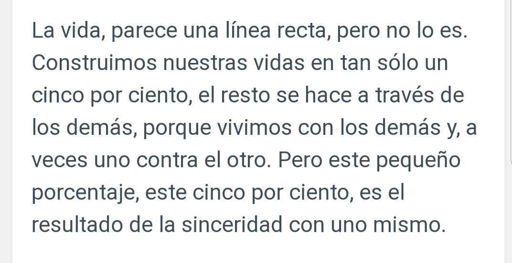

La vida perece una línea recta pero no lo es. Construimos nuestras vidas en tan sólo un 5%, el resto se hace a través de los demás. Pero este pequeño porcentaje es el resultado de la sinceridad con uno mismo.
